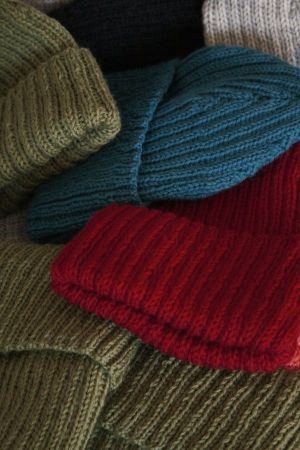

BINI cepures
Bini (angliski – beanie) cepure ir laika pārbaudījumu izturējis cepures modelis. Bini cepurīte ir pieguļoša cepure, kas var būt ar atloku vai bez, kuru var rotāt dažādi raksti – ēnu raksti, pīnes, valnīša raksti, patentraksti vai žakards, kā arī vienkārši labiskais adījums.
BINI cepuru veidi
Izšķir vairāku BINI cepure veidus:
- galvai pieguļoša cepure ar vai bez atloka;
- pagarinātā bini cepure;
- slouchy jeb nošļukusi bini cepure.